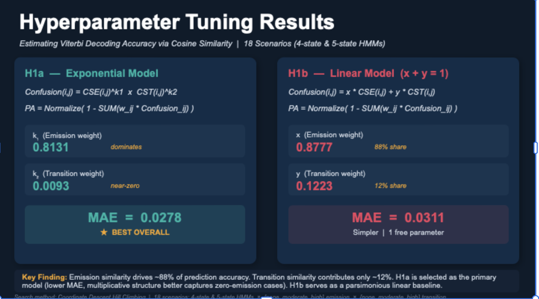
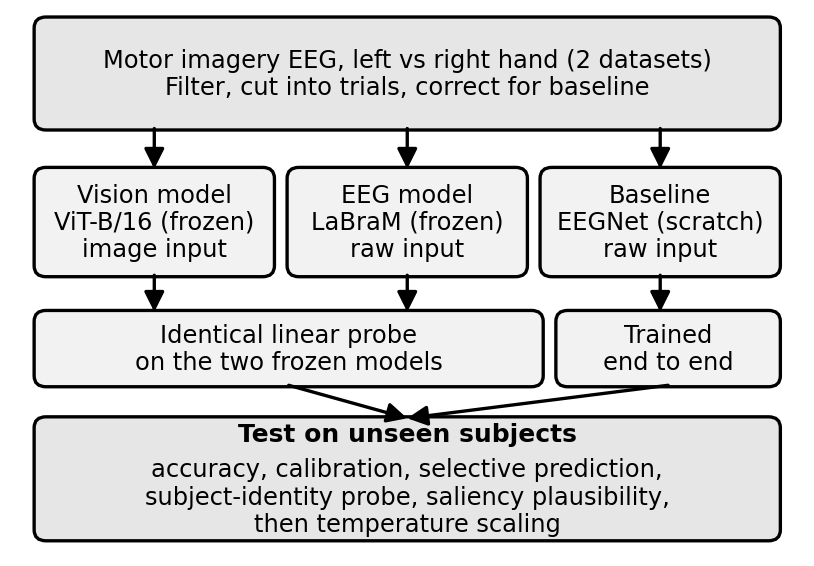
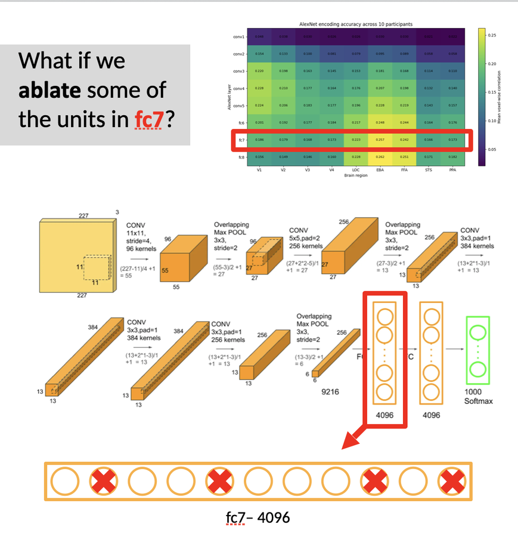
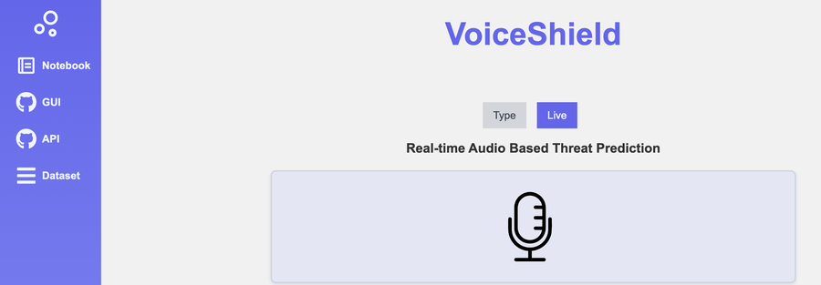

Sosna Worku Achamyeleh
MS student in Artificial Intelligence and Machine Learning at The George Washington University, advised by Xiaodong Qu. Black in Robotics + 3M Tuition Fellow. Previously BSc in Software Engineering at Addis Ababa University.
I am applying to PhD programs for Fall 2027.

Updates
- Oct 2026Gave an oral presentation at MICAD 2026 in Edinburgh on reliability and explainability of vision transformers under medical distribution shift.
- Sep 2026Submitted a paper on estimating Viterbi decoding accuracy to ICAART 2027, and a thesis proposal on trustworthy EEG decoding to HCII 2027.
- Aug 2026Started my master's thesis on whether domain-specific pretraining makes EEG decoding more trustworthy for unseen users.
Research
I work on whether a model's confidence and explanations can be trusted once the data shifts. That question runs through chest X-rays across hospitals, EEG decoding for unseen users, and representation analysis linking deep networks to visual cortex.
Interests: trustworthy AI, distribution shift and robustness, uncertainty quantification and calibration, explainability, foundation models, representation analysis, multimodal learning.
Publications and Manuscripts

Reliability and Explainability of Vision Transformers Under Medical Distribution Shift: A Comparative Study on Chest X-Ray Classification
MICAD 2026, Edinburgh · Oral presentation · code
The ViT wins in distribution (0.800 vs 0.745 AUC) but both models degrade across hospitals, calibration error rises roughly sixfold, and MC-Dropout flags nothing useful.

Estimating Viterbi Decoding Accuracy Using Emission and Transition Similarity
Submitted to ICAART 2027
Predicts decoding accuracy without running Viterbi. Adding transition similarity to the emission-only estimator cuts error by about 28% across 189 HMMs.

SubTrust: Does Domain-Specific Pretraining Make EEG Decoding More Trustworthy for Unseen Users?
Proposal submitted to HCII 2027, AI in HCI track · code
Compares ViT-B/16, LaBraM, and EEGNet on unseen subjects, scoring calibration and selective prediction rather than accuracy alone, plus a saliency plausibility measure.

Transformers Are More Accurate but More Confidently Wrong in Stress Detection on Reddit
Manuscript, 2026
DistilBERT beats classical baselines on Dreaddit at 0.793 macro F1, yet is worse calibrated than the models it outperforms.
Other Research Projects

Investigating Face-Selective Visual Information Using Deep Neural Network Ablation
Neuromatch Academy, 2026 · six-person team
Built voxel-wise encoding models across nine visual regions. Ablating the 50 most face-selective AlexNet units hurt fusiform prediction far more than matched controls.

Threat Detection in Spoken Amharic Language
Addis Ababa University, 2024 · live demo
Collected and annotated 5,800 recordings for a language with almost no speech resources. The best CNN reached 91% accuracy and 0.89 F1.
Experience
Teaching
- 2025Assistant Lecturer, Computer Programming, Addis Ababa University. Lectures, labs, and a live coding session after each class.
- 2024Teaching Assistant, Data Structures and Algorithms, AddisCoder. Supported 99 high school students from across Ethiopia.
- 2024Back-end Development Instructor, Ethioware EdTech Initiative. Trained 54 women across several African countries.
Professional
- 2025Software Developer, Phoenixopia Solutions PLC, Addis Ababa
- 2024–2025Task Lead, Machine Learning, Omdena San Jose Chapter. Led 25 engineers on cardiovascular risk modeling with NHANES data.
Leadership
- 2023–2025Head of Communications Education, Africa to Silicon Valley. Trained 205 students from more than 20 African countries.
Awards and Talks
- 2025Black in Robotics + 3M Tuition Fellowship One of two awardees nationally for 2025–26 announcement
- 2024Best Poster Presentation Team award, AAU Research Week certificate
- 2023Aspire Leaders Program Top 2% finalist from a global applicant pool certificate
- 2023Third-place team award A2SV internship program with Eskalate LLC
- 2021Huawei Seeds for the Future Top 40 students in Ethiopia certificate
Talks and Posters
- Oct 2026Oral presentation, Reliability and Explainability of Vision Transformers Under Medical Distribution Shift, MICAD 2026, Edinburgh
- Apr 2026Poster, stress detection benchmarking, GWU SEAS Research and Development Showcase
- May 2024Poster, Threat Detection in Spoken Amharic Language, AAU Research Week
Education
- 2025–2027MS, Artificial Intelligence and Machine Learning, The George Washington University. GPA 3.78. Thesis advised by Xiaodong Qu.
- 2019–2024BS, Software Engineering and Computing Technology, Addis Ababa University. GPA 3.62, Great Distinction.
- 2026Deep Learning Course, Neuromatch Academy
Contact
Happy to hear from prospective collaborators and PhD programs. Reach me at sosna.achamyeleh@gwu.edu.